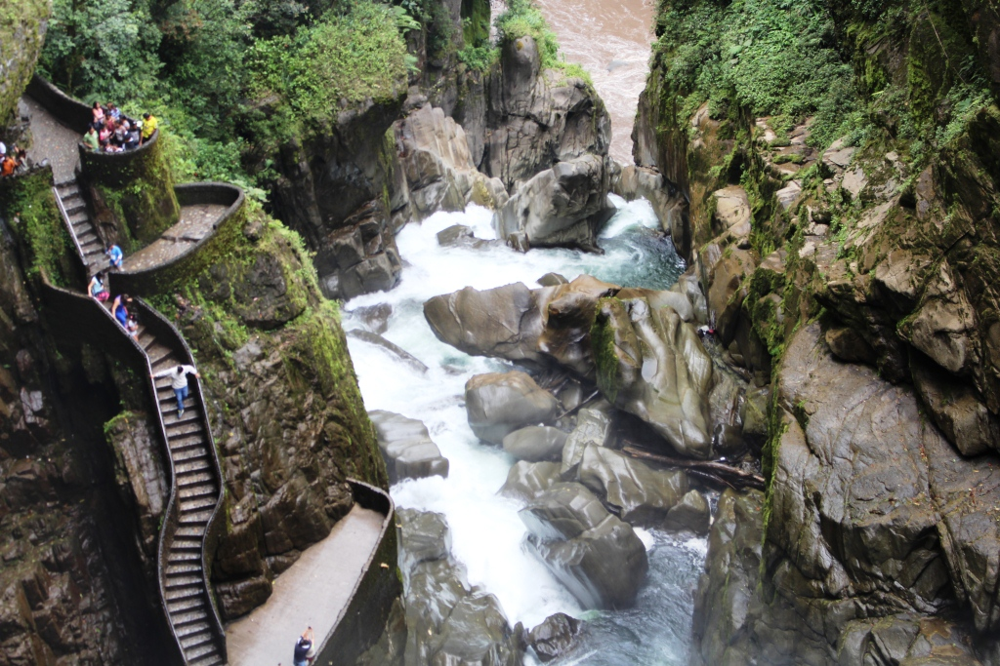

Equador |
|
Equador é uma repúblicademocrática representativa localizada na América do Sul limitada a norte pela Colômbia, a leste e sul pelo Peru e a oeste pelo oceano Pacífico. É um dos dois países da região que não têm fronteiras comuns com o Brasil, além do Chile. Além do território continental, o Equador possui também as ilhas Galápagos, a cerca de 1 000 km do território continental, sendo o país mais próximo daquelas ilhas. Seu território de 256 370 km 2 é cortado ao meio pela imaginárialinha do Equador. A principal língua falada no país é o espanhol (94% da população). Entre os idiomas oficiais em comunidades nativas estão o quíchua, o shuar e onze outros idiomas. A sua capital é a cidade de São Francisco de Quito, mas comumente conhecida como Quito, que foi declarada Patrimônio da Humanidade pela UNESCO em 1970, por ter o centro histórico mais bem preservado e menos alterado daAmérica Latina. A maior cidade equatoriana, no entanto, éGuayaquil. O centro histórico de Cuenca, a terceira maior cidade do país, foi declarado Patrimônio Mundial em 1999, como um exemplo notável de uma cidade planejada, de estilo espanhol colonial, no interior da América.
 |